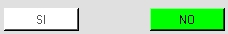

QUADRI
I
quadri guidano l'utente nella valutazione d'incidenza.Ogni quadro
presenta una domanda a cui l'utente puo' rispondere si o no. A seconda
della scelta si apre il quadro successivo.
In
alcuni casi i pulsanti si attivano solo dopo che viene soddisfatta una
condizione ( ad esempio quando il valore di un indicatore supera un
certo valore di soglia): il pulsante attivo e' quello di colore verde
mentre il pulsante inattivo e' quello bianco.
I
quadri possono inoltre contenere dei pulsanti che permettono di aprire
delle tabelle per il calcolo di indicatori necessari per la valutazione
oppure consultare i testi relativi alle incidenze dell'attivita' umana
e alle misure di conservazione dei SIC.